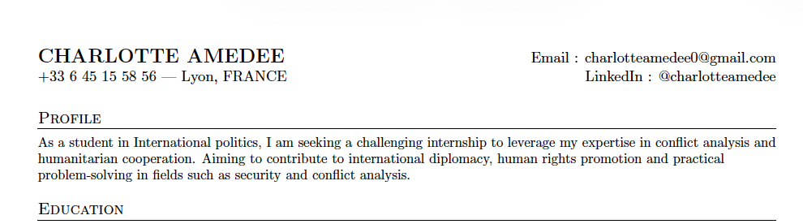
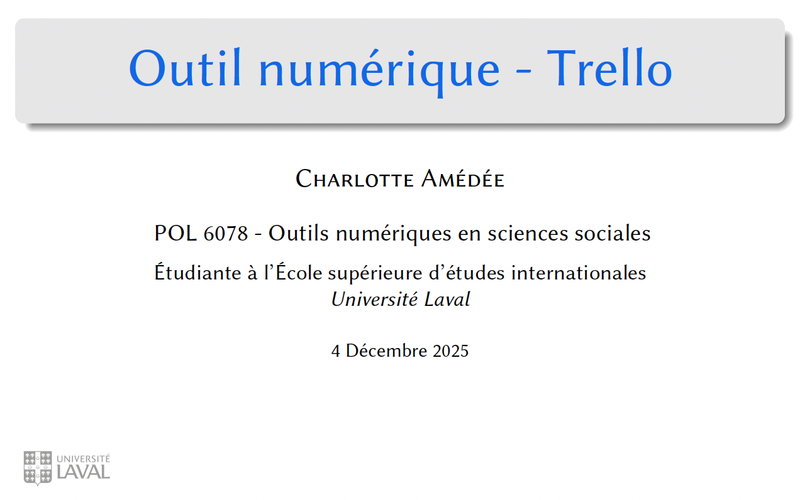

Etudiante de maîtrise en Relations Internationales et Diplomatie.
Passionnée de politique internationale, j'étudie en ce moment dans la maîtrise en relations
internationales et diplomatie de l'Université Laval (Québec), afin de me spécialiser sur les
questions d'analyse de conflits et d'aquérir des nouvelles compétences en gestion et en outils numériques
d'étude de données. Actuellement à la recherche d'un stage dans le domaine de l'analyse
de conflits ou auprès d'ONG sur des questions de coordination humanitaires, j'espère me spécialiser
sur la région est-européenne et russophone.
Réalisations et expériences académiques
Lors de mes différentes activités extra-scolaires, j'ai touché de près
ou de loin aux questions de paix et d'études des conflits internationaux,
sous des formes diverses.
Summer School
Participation à la Bordeaux Summer School sur les Conflits et Interventions internationales.
Veille de conflits
Veille d'actualité des conflits et processus de paix internationaux dans l'association Guerres et Paix.
Mémoire de Bachelor
Recherche sur les enjeux des chemins de fer dans la guerre en Ukraine.
Simulations de négociations auprès du MUN de Sciences Po Bordeaux.
Ateliers Paix
Animation d'ateliers sur la paix positive auprès d'étudiants du secondaire.
Mon CV
Vous trouverez ci-dessous un aperçu de mon parcours académique
et extra-scolaire, centré sur l’analyse des conflits en particulier.

Consultez mon CV
Cliquez sur l'image ci-dessus ou sur le lien ci-dessous pour ouvrir mon CV en PDF dans un nouvel onglet.
Ayant un parcours très pluridisciplinaire, j'ai aujourd'hui choisi de me spécialiser sur les questions de
défense et d'explorer de nouveaux domaines comme l'analyse de conflits civils
Voir le CV en PDF
Mes Projets
Voici un aperçu de mon parcours académique, de mes projets numériques et de mes engagements extra-scolaires.

Cours d'outils numériques (POL-6078)
Cliquez sur l'image ou sur le lien ci-dessous pour explorer le contenu de ce projet.
Voir le projet complet

Présentation de Trello
Cliquez sur l'image ou sur le lien ci-dessous pour explorer le contenu de ce projet.
Voir le projet complet
Me contacter
Vous pouvez me contacter pour discuter d'opportunités de stage ou pour échanger sur des sujets liés à l'analyse de conflits.